很久以来，肽段保留时间的预测一直是靶向蛋白质组学感兴趣的研究内容。早在 0.2 版中，Skyline 就整合了基于未修饰肽段序列计算疏水性的 SSRCal 计算器1，来作为一种预测肽保留时间的方法，“靶向方法优化”教程中对此进行了描述。到了 0.5 版，Skyline 开始支持靶向实验的预定保留时间采集方法。“靶向方法优化”教程中对这种技术进行了介绍：首先在准备开展重复测定实验的液质系统上以非预定模式采集所有靶向肽段，获得肽段的保留时间的信息。只要不更改色谱条件，就可以使用非预定模式下的保留时间来进行后续的预定模式采集。
非预定模式实验方法有一个缺点：每次色谱条件变化时，都可能需要进行许多质谱实验来确定预定方法，无论这样的色谱条件变化是来源于不同实验室之间的方法共享还是实验室内部的不同仪器，又或者是实验过程中同一台仪器上仅仅是色谱分离柱的变化。比如在 MacCoss 实验室的一次实验中，为了完成在一次实验中对 780 个离子对进行预定采集的 45 次重复测定，总共进行了 5 次非预定采集。在 NCI-CPTAC 验证研究小组进行的一次实验中，为了完成在一次实验中对 750 个离子对进行预定采集的 150-200 次进样，总共进行了 6 次非预定采集，因为这项研究涉及 11 个实验室中的 14 种仪器，并且一些实验室还采用了不同的色谱柱条件来完成足够的进样。显然，如果一项技术能够将此前已经测定的肽段保留时间存储用于各实验室、仪器平台或者在梯度变化时仅需一次校准，则会极大地简化靶向实验中所使用的预定方法的生成过程。
更准确的保留时间预测能力也可以使预测的保留时间成为一种更强大的峰识别验证工具。例如，假设色谱保留时间预测的 2 倍标准差距离平均值是 5 分钟，如果能够精确到 1 分钟，将会筛选出更多可信的候选峰。
自最初编写本教程以来，iRT 保留时间校准标准品的市场得到了极大的发展。但即便如此，本教程最初采用的Biognosys的 标准品目前仍然使用广泛。这里介绍的 iRT 概念现在也广泛应用于全蛋白组水平的 DIA 实验中，根据DDA数据中鉴定到的肽段的校准后的保留时间，在DIA数据中进行搜索。在这些实验中，使用内源肽段作为校准锚点也变得越来越普遍，从而完全免除了标准品的费用和复杂性。
在本教程中，您将学习如何把 30 分钟色谱梯度上测得的色谱保留时间存储为 iRT 值，然后用这些 iRT 值来为 90 分钟色谱梯度的实验分析预定靶向方法。您还将了解更小的 iRT 保留时间预测误差如何提高峰确认的可靠性。此外，您还会学习如何将数据依赖型采集 (DDA) 实验图谱库中的肽段保留时间转化为 iRT 值，这样就可以直接利用探索性实验中的肽段保留时间信息，来预定靶向实验。这只需要进行一次校准进样，或完全无需预定即可查询 DIA 数据中的肽段。
开始本教程之前，请下载下列 ZIP 文件：
https://skyline.ms/tutorials/iRT.zip
将其中的文件解压到您的电脑文件夹，如：
C:\Users\brendanx\Documents
这将创建一个新文件夹：
C:\Users\brendanx\Documents\iRT
其中包含本教程所需的所有文件。在 Windows 文件资源管理器中双击此文件夹中的“iRT-C18 Standard.sky”文件，或单击 Skyline 文件菜单中的打开，均可打开该文件。
在本教程中，虽然您将使用“iRT工具包”来处理 Biognosys 定义的 iRT-C18 标准标尺，但 iRT 本身是一个通用概念，适用于任意易于测量并且覆盖您大部分色谱梯度的锚固肽段集合（通常建议使用 10 - 20 个锚固肽段）的肽段。在对已打开的文档做出任何变更前：
开始本教程之前，我们假定您已执行以下操作，在自己的仪器上完成了一批合适的标准肽段测量，准备好校准新的 iRT 计算器：
表单应显示如下：
再次返回 Skyline 主窗口，并执行以下操作：
此时 Skyline 将显示如下保留时间视图：

上图呈现了30 分钟梯度条件下，每条肽段平均洗脱时间的整体视图。执行以下操作继续查看数据：
此时，Skyline 将显示如下：

使用向下箭头键分别查看 Biognosys 标准肽段混合物中的 11 个肽段，确保整合正确无误，并且两次重复测定均在相似的保留时间出现色谱峰。其实，自动整合非常适用于这些肽段，您不必做出任何手动修改。本教程仅包括两次重复测定。如果您自行校准新的 iRT 计算器，可能需要使用更多次重复测定来改善对肽段平均保留时间的估计。在要 Skyline 使用结果来校准保留时间计算器时，Skyline 将使用每个肽段多次测量的平均值，这些值根据肽段的真实保留时间进行估计，其精度与测量次数的平方根呈正比。
验证校准数据质量后，执行以下步骤，以创建新的 iRT 计算器并进行校准：
 ，然后单击所示菜单中的添加。
，然后单击所示菜单中的添加。此时，校准 iRT 计算器表单将显示如下：

注意：这仅仅是 Biognosys 定义 iRT-C18 标尺的方法。在定义您自己的标尺时，可以将固定点保留为第一个和最后一个洗脱肽段，也可以使用您所选择的其它任意肽段。也就是说，固定点和标尺的选择具有一定的随意性。因此，您可以定义与任意时间都无关的相对保留时间标尺，然后将其余 iRT 值映射到该标尺上。
此时，编辑 iRT 计算器表单显示如下：

整个过程就是这样。您已经利用测量数据校准了一组新的 iRT 标准。但在本案例中，Biognosys 团队很可能使用了 2 次以上的重复测定，来校准其标准肽段混合物。因此，在本教程中，您可以简单地利用 Biognosys 提供的标准结果来替代这次的校准。但为了更好地了解两者之间的接近程度，请执行以下步骤：
为了更仔细地比较，您还可以使用 Alt-PrtScn 截屏并粘贴到图片编辑器中，或将网格内容复制粘贴到 Excel 中，然后在 Excel 中并排比较这些值。
您会看到，新计算的 iRT 值与定义值相当接近。在您的实验中，如果您的所有工作都在相同色谱上进行，并且您在使用 Skyline 来校准所有 iRT 值，那么重新校准这些值可以获得最佳结果。否则，定义的值可能会导致您的色谱与创建定义所使用的色谱之间出现误差。在使用或创建广泛共享的 iRT 值时，您可以遵循定义。
在本教程中，现在将切换到定义值。为此，请执行下列步骤：
要查看肽段色谱保留时间定义值和实验测定值之间的相关性，请执行下列步骤：
Skyline 将显示下面的图：

在图的左上角，可以看到 Pearson 相关系数为 0.9991。如果在 x 轴下方未看到 iRT-C18，则需要执行下列操作：
如果您要分别查看两个已导入的重复测定的回归图，请执行下列操作：
此时，如果单击这两个重复测定的色谱图，会看到截距值从 1_30min 的 15.15 变为 2_30min 的 15.04。虽然差异非常微小，但对较复杂的数据集执行这类检查是十分必要的。
您现在已经有了全面校准的 iRT-C18 计算器，但如果不用来计算除了标准肽段以外的其它肽段的 iRT 值，它对您的用处就不大。在本节中，您将根据从 SRM 实验得到的结果，把首个目标肽段添加到计算器。开始处理新肽段之前，请保存当前文件，然后执行下列步骤，以创建用于计算新目标肽段 iRT 值的文档：
目标视图应显示如下：

如果您在自己的仪器上采集数据来计算新的 iRT 值，可能需要获得在仪器上采集数据的方法。查看 Skyline 窗口的右下角，会看到此文档当前包含 1231 个离子对，可能需要几次非预定进样来完成检测，但您可以利用以下两点情况来减少工作量：
因此，实际需要处理的离子对数量可以减半，请执行下列步骤，删除此文档中的重标母离子：
您会看到离子对数量减少至 632。在导出实验方法来测量这些新肽段的保留时间之前，需要指明您在使用新的 iRT-C18 计算器，以便 Skyline 将标准肽段的离子对包含在生成的所有仪器方法中。您可以执行下列步骤来完成这项操作：
表单显示如下：

要导出非预定的离子对列表来测量新的目标肽段，请执行下列步骤：
此时，导出离子对列表表单将显示如下：

您刚刚生成了两个用于新目标肽段色谱保留时间测定的离子对列表，这两个列表均包含 Biognosys 标准肽段混合物，可用于计算目标肽段的新 iRT 值。重要的是，每次进样都会检测标准肽段，并且 Skyline 会自动为您处理，即便对于涉及多次进样来测量文档中所有目标的预定方法，也会做到这一点。
在您自己的实验中，可以选择直接导出仪器方法，从而避免手动加载离子对列表。您也可以
选择更小的最多离子对数。的确，您只是为了挑选出一批可识别的色谱峰，用来获得可靠的肽段保留时间测量值，但对于老式的三重四极杆仪器而言，335 这个数值有点太大了。您还可以从 DDA 库中获得更多
iRT 校准信息，在本教程末尾时将执行该操作，您也可以从 DIA 运行中获得这些校准信息。但即便是现代的三重四极杆仪器，在单独一次运行中可以检测的肽段数量仍然相对有限。
在 Excel 中打开生成的 CSV 文件“iRT Human+Standard Calibrate_0001.csv”和“iRT Human+Standard Calibrate_0002.csv”，您将看到适用于 Thermo TSQ 仪器的正常离子对列表。在每个文件的底部，可以看到 iRT 计算器中列出的用于测量标准肽段的离子对。
本教程文件夹中包含您刚才创建的离子对列表的数据采集文件。实际上，您已在本教程的 iRT 校准部分导入了这些文件。只不过，您选择忽略了这些人类肽段的色谱图而已。要将文件导入当前文档，请执行下列步骤：
要查看 iRT-C18 计算器如何计算这些新肽段的分数，请执行下列操作：
完成数据导入之后，您将看到下图：
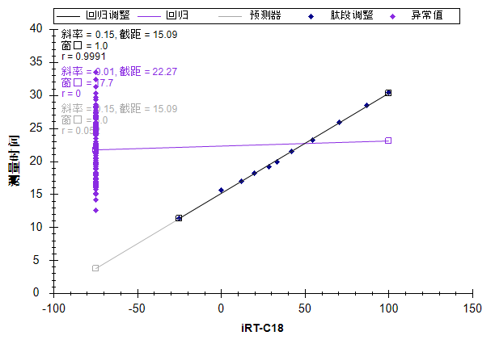
图中左侧的紫色散点表示这些肽段尚无校准的 iRT 值。不过在计算 iRT 值之前，最好对峰的整合情况进行检查。如果您真正希望对自己的 iRT 值进行准确校准，最好非常仔细地对所有肽段执行此操作。
在将它转变为 iRT 之前，您可能想要使用前几次的非预定模式采集的数据，来创建您可以在多次重复测定中测量的预定模式方法，从而改善对平均保留时间的估计。如果仅仅进行一次测量，基本的统计学知识告诉我们，大约有 5% 的肽段将会出现在您所预测的平均值的 2 倍标准差之外。
然而，本教程中只使用一次测量的数据，对整合也仅进行粗略的检查。要审查 Skyline 在其中发现存在整合问题的肽段，请执行下列步骤：
查找表单将显示如下：
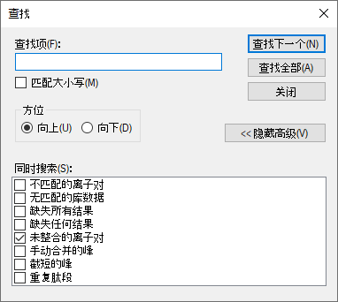
在 Skyline 窗口底部可以看到查找结果视图，其中显示了 6 个未整合的离子对：
要检查包含这些峰的肽段，请执行下列操作：
您将看到若干存在干扰的离子对，其信号强度低于最强离子对的 1%（按区域面积计算）。
Skyline 将排除这类离子对，从而帮助您决定保留哪些离子对用于最终定量方法。但是，如果您已经做出了决定，则可以执行以下操作隐藏此信息：
| 注意：这在数量上对 Skyline 不再有任何影响。所有定量离子对始终纳入总面积计算。要将离子对转变为非定量离子对，可以在目标视图中单击鼠标右键，或使用文档网格中的定量属性。 |
此时若要计算本文档中目标肽段的 iRT 值，请执行下列步骤：
Skyline 将显示以下消息：
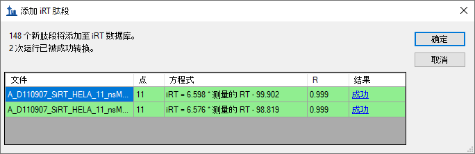
请注意，在对这两次运行生成 iRT 值时，Skyline 会为每次运行分别执行线性回归，然后使用每次运行的线性回归，来计算该次运行中的肽段的 iRT 值。如果多次运行中包含相同的肽段，Skyline 将采用多次计算得出的 iRT 值的平均值。与直接计算物理保留时间平均值的方法不同，这种方法允许多次运行之间的梯度变化。单击网格结果列中的超链接文本“成功”，可以查看这两次运行中的回归图。
Skyline 会询问您是否想要重新校准与所添加的肽段有关的 iRT 标准值。
此时，编辑 iRT 计算器表单将显示如下：
保留时间视图将变为如下所示：
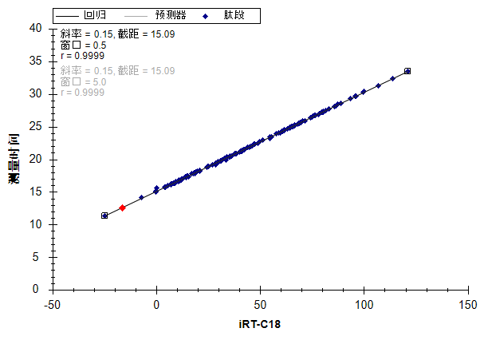
您刚刚使用 30 分钟梯度采集的数据校准了 148 个新的人类肽段的 iRT-C18 值。
接下来，您将探索 iRT 如何利用现有方法支持新的色谱条件设置，即使改变洗脱梯度，iRT 也能在仅进行一次校准后，提供相对较小的时间窗口开始预定采集。
| 备注：自编写本教程以来，有一点变得显而易见，那就是尽管 iRT 库非常灵活，但在色谱匹配尽可能接近数据采集时的状态时，iRT库的效果最好。来自完全相同的色谱条件的iRT库，比存在色谱柱改变或是几年前采用完全不同的色谱条件的库更有效。 |
如果您是在自己的实验室里执行此操作，则需要打开“iRT Standard.sky”原始文件，为其导出实验方法，然后在准备妥当的样品中加入标准肽段混合物，实现数据采集。本教程文件夹中包含一个严格按照这种方法创建的原始数据文件。与上述同样的样品再次接受了质谱检测，但是采用不同的洗脱梯度（90 分钟）和一个新的色谱柱，不过这次仅分析标准肽段。
在继续之前，请先执行下列操作：
为了适应新的色谱柱和 90 分钟梯度，需要重新校准方法，请执行下列操作：
肽段设置表单应显示如下：
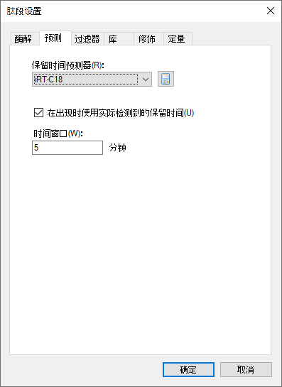
完成数据导入后，保留时间回归图将显示如下：
此时，可以看到标准肽段的洗脱时间范围约介于 15 至 65 分钟之间，此次运行中未对其中任何目标肽段进行测量。不过，此时您已准备好在新梯度上对肽段进行测量。
在创建预定方法前，您可以执行以下操作，来更好地了解离子对在某种预定参数下的测量方式：
保留时间视图中将出现新的时序安排选项卡，并显示类似如下的图：
如果您未能在上图中全部看到这三条线，则可执行下列操作：
从此图可以看到窗口大小对于预定方法的影响。时间窗口越小，则在给定时间内允许同时测定的离子对越少，这使得能够在特定驻留时间内，对单次进样中的更多离子对进行测定。捕获整个色谱峰的目标肽段百分比所需的窗口大小通过以下公式进行近似估计：
其中“z”为在正态分布条件下，一定百分比范围覆盖时的标准差临界值，如 z(95%) =1.96。在拥有完美预测并且不考虑峰宽或保留时间偏差的条件下，所需窗口大小正好为色谱峰宽。即使能够进行完美预测，峰宽以及保留时间的偏差也会扩大所需窗口尺寸。最后，预测误差也会进一步扩大窗口尺寸。值得注意的是，即使采用最先进的保留时间预测方法，在预定采集之前仅仅进行一次非预定测量也是不够的。因为您是试图预测平均保留时间，但是在单独一次测量中，大约 5% 的肽段会偏离均值 2 倍标准差之外。
在本教程中，iRT 方法允许在 90 分钟的洗脱梯度运行中，采用 5 分钟的时间窗口对目标肽段进行测量。上图指示在一个检测周期中可以测量不超过 265 个离子对。在 10 毫秒的驻留时间条件下，最多将产生 2.6 秒的检测周期。为了创建一种能够在新梯度下对本文档中涉及的 1223 个离子对进行预定检测的方法，请执行下列步骤：
导出离子对列表表单将显示如下：
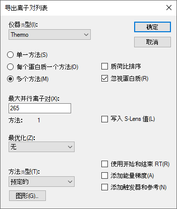
您可以简单地选择单一方法选项，但表单实际显示出“方法：1”，确认了在 5 分钟检测窗口以及同时测定的离子对数量不会超过 265 的条件下，所有的离子对都能在单次进样中获得测量。对于定量测量而言，这个数量可能仍然略高，但却比需要测量 335 个离子对，因而只能在 2 次进样中各检测一半的离子对要好。您还可以根据自己的喜好将此数字降至 135，此时会看到 Skyline 显示实现这个目标需要进行两次进样。如果需要将此数字降至 90，则显示需要进行 3 次进样。但在继续下一步之前，务必将此数字恢复为 265。
在 Windows 文件资源管理器中，您可以验证是否会在本教程的 iRT 文件夹中创建“iRT Human+Standard_0001.csv”文件。在 Excel 中，可以验证此文件是否包含全部 1223 个离子对，
以及时序安排的起始和结束时间是否间隔 5 分钟。
要审查采用刚刚创建的方法采集的数据，首先执行下列操作，删除 90 分钟梯度校准数据：
此时，执行下列操作导入使用预定方法采集的数据：
在加载数据时，可以执行下列操作将保留时间视图切换回线性回归：
数据加载完成后，保留时间视图将显示如下：
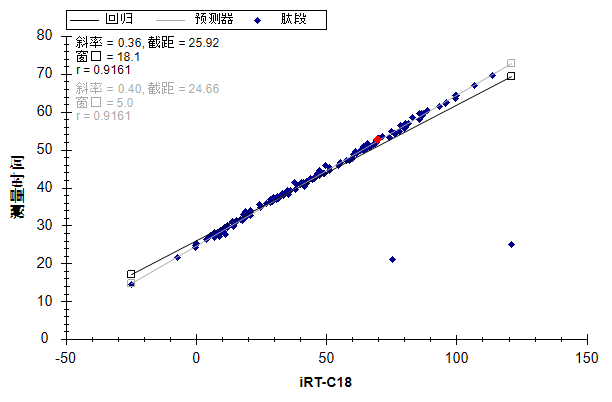
从此图中一眼可以看出有 2 个异常肽段，可能的原因是当前数据中的色谱峰整合错误，或用于计算 iRT 值的校准数据中的色谱峰整合错误。在本案例中，问题出在skyline在 对 30 分钟梯度进行iRT校准时，自动选择了错误的色谱峰。您所审查的数据其实并非通过上述生成的预定方法采集，了解这一点非常重要。如果是根据上述生成的预定方法采集的数据，则异常肽段的色谱图甚至不会包括此处检测到的几个峰。此数据是基于更加彻底地审查校准数据（本教程跳过了该步）创建的预定方法收集的。
如果您想知道图例中的“异常值”为何只有一个点显示为紫色（这是因为所设置的相关系数阈值尚不适用于相关性如此高的计算器），则可以执行下列操作，更改相关性阈值：
此时，保留时间图将显示如下：
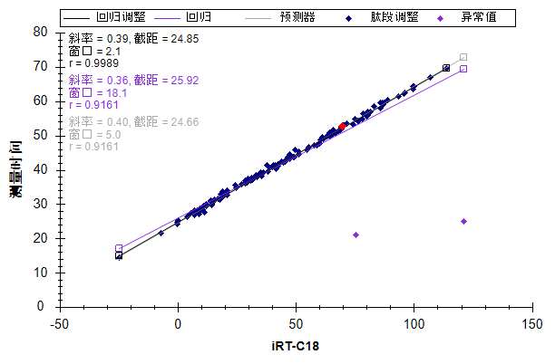
现在您可以单击每个异常点，Skyline 将在肽段视图中对其进行显示。然后按下 Esc 恢复主窗口，并按下 Ctrl-C 复制肽段标记。您也可将这些内容收集到单独的编辑器中，供以后审查使用，或者为之前创建的“iRT Human+Standard
Calibrate.sky”文件打开另一个 Skyline 实例。然后，可以使用
查找表单审查这 2 个肽段：
EVVEEAENGR
LLADQAEAR
对这两个肽段，会发现很难在校准数据中看到匹配很好的色谱峰。这也就解释了为何在校准实验中应多加小心的原因。
现在您可以根据这些更准确的数据，重新计算本文档中所有肽段的 iRT 值，这些数据通过使用同位素标记的参考肽段，确保正确选择色谱峰。重复上述校准步骤，并在询问时选择替换现有值。然而在本教程中，您可以直接执行下列步骤除去校准有误的肽段：
删除图中的 2 个异常值，肽段数量应减去 2，降至 156。所有的点在回归线附近紧密聚集，相关系数 R 为 0.9989。但是，为了更好地了解测量时间与线性预测的接近程度，请执行以下操作：
此时，保留时间图将显示如下：
这样您可以更清楚地看到测量时间在预测时间的 +/-2 分钟内的变化。 在本例中，您应当使用什么保留时间时序安排窗口？实验中用的是什么？
现在单击目标视图，并使用向下箭头键审查肽段色谱图。Skyline 将显示如下的图：
您会看到除标准肽段以外的所有肽段都具有轻标母离子对和重标母离子对，并且相比非预定数据，每个色谱峰的点通常更多。您还会看到 Skyline 在标记“预测的”注释下方显示了色谱峰的预测时间。
要回答上面关于时序安排窗口的问题，请执行以下操作：
在看到色谱图的 6 分钟范围后，请执行以下操作：
在本实验中，数据采集自单次进样。但是，由于设置了自动计算回归，Skyline 将为每次进样（甚至包括那些需要多次预定进样才能测定所有肽段的文档）分别计算回归，这样做可以让定量更加精确。在为此类文档导出方法时，Skyline 将在每个方法中自动包含标准肽段的离子对。相比对所有进样只计算一个线性方程，自动回归功能可以确保更加准确的预测保留时间，这样“预测”注释就成为一种更加强大的肽段鉴定验证工具。
如果您收集的是数据依赖模式采集 (DDA) 的数据，其中也掺入了足够高浓度的用于创建 iRT 计算器的标准肽段（因而这些标准肽段采样密度足够高并且能在其串联质谱谱图中可靠地确认），则可以采用与处理 SRM 数据相同的方法计算 iRT 值。一般来说，这些 iRT 值精度较低，因为是基于肽段色谱洗脱峰上随机采样获得的扫描时间。然而，如果直接对 DDA 探索性实验中的离子对使用基于扫描的 iRT 值来指导创建 SRM 预定实验，可以节省大量的仪器时间。这也已成为校准 iRT 值用于查询非数据依赖采集 (DIA) 数据中色谱峰的最常用方法，DIA/SWATH 数据分析教程中对此进行了说明。
在本教程的 iRT 文件夹中，您将发现包含谱图库“Yeast_iRT_C18_0_00001.blib”的子文件夹“Yeast+Standard”。此谱图库是根据酵母裂解物两次 DDA 运行的 SEQUEST 肽段搜索结果创建的，并添加了 Biognosys RT 标准混合物。如下面所示，只要 iRT 数据库中的肽段足够多，导入的数据中不一定需要包括标准肽段。不过，您需要使用 Skyline 创建的 BiblioSpec 图谱库格式。因为在其它图谱库格式中，不会为每个肽段分别存储每次质谱运行的保留时间，从而导致无法对同样色谱条件下的一组保留时间进行回归。
您可以执行下列操作，在此库中添加肽段谱图匹配的 iRT 值：
添加谱图库表单将显示如下：
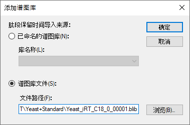
Skyline 将呈现如下所示的表单：
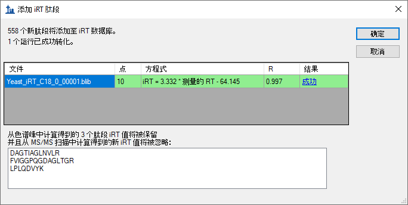
该表单显示 Skyline 可以为库中的两次 DDA 运行计算出一个有效的回归系数。如若可能，Skyline 将利用运行之间所有匹配的肽段，执行运行间的内部回归运算，这被证明比只使用标准肽段的回归效果好。Skyline 利用这个最终校准回归为 558 个新肽段计算了 iRT 值。在进行内部校准后，Skyline 将使用与一个肽段相匹配的所有串联质谱谱图的保留时间中位数，这样有助于避免异常匹配的串联质谱谱图而导致无意义的 iRT 值。Skyline 还发现有 3 个肽段的 iRT 值已经根据色谱峰获得，因此将跳过。
Skyline 会询问您是否想要重新校准与所添加的肽段有关的 iRT 标准值。
此时，编辑 iRT 计算器表单将显示其它 iRT 值列表中有 706 个肽段。
您可以使用刚刚根据串联质谱扫描时间计算得出的 iRT 值来预定这些肽段的 SRM 采集，然后使用 SRM 数据根据色谱峰时间获取更加精确的 iRT 值。但是，您也可以使用 Skyline MS1 筛选，直接从原始 DDA 数据提取色谱峰时间。在 MS1 筛选教程中可以查看如何设置并将数据导入 MS1 筛选文档的详细信息。在本教程中，您可以执行下列操作快速浏览已创建并导入数据的文档，包括用于创建谱图库的两个 DDA 数据：
Skyline 窗口将显示如下：
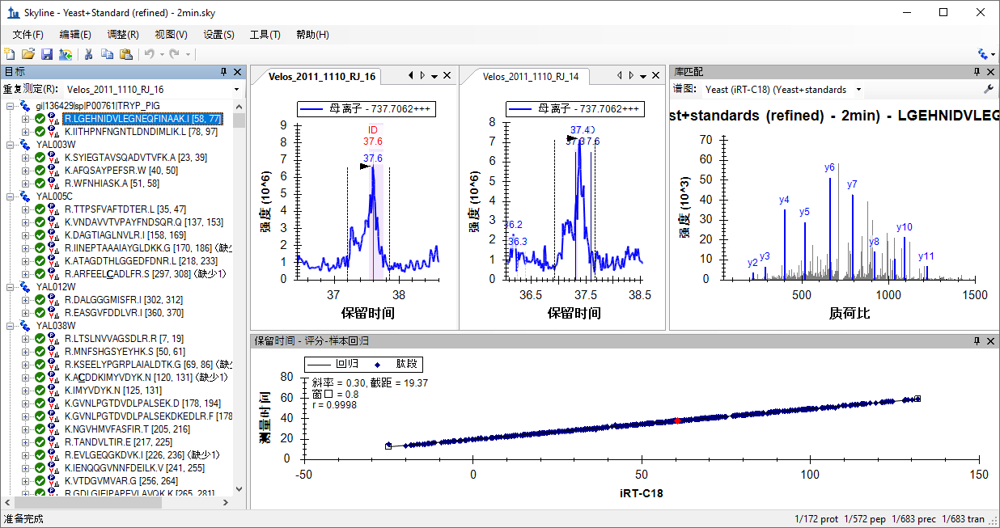
为更好地查看该图，您可以双击保留时间视图中的标题栏，会看到用库谱图方法计算的 iRT 值与实际检测的保留时间的相关系数为 0.9998。因此，相较于采用串联质谱扫描时间获得模型而言，使用色谱峰获得的模型精度可能低于预期。另一方面，该数据进行了手工调整，仅仅保留了那些在两次运行中都检测到且具有明确色谱峰的肽段。在使用谱图库数据来计算肽段的初始 iRT 值时，还可以附加一些条件。
您在此文件中看到的色谱图提取自创建该谱图库所使用的 DDA 运行的 MS1 扫描。您还可以查看所鉴定的串联质谱图的扫描时间，这些串联质谱在色谱图中用“ID”进行注释。此外，还可以在 MS1 全扫描筛选教程中学习如何使用这种十分有用的数据处理方法。
要将使用串联质谱扫描时间计算得出的 iRT 值转化为使用本文档中色谱峰的值，请执行下列步骤：
Skyline 将显示如下表单：

系统将替换您在上一部分添加的 558 个 iRT 值。由于您在使用色谱峰时间，因此还可以选择更换酵母和人类样品共有的 3 个肽段，或使用两者的平均值。
Skyline 会询问您是否想要重新校准与所添加的肽段有关的 iRT 标准值。
现在这 706 个肽段的 iRT 值相当好，虽然这些值仅基于不超过两次重复测定计算得出。在这些初始案例中，您使用了包含 iRT-C18 计算器定义中指定的标准肽段混合物的数据集。但其实未必要这样。现在，您可以利用与现有 iRT 数据库具有足够多共同肽段的数据集来计算新的iRT值。只要存在至少 20 个共同肽段，Skyline 就会使用所有这些共同肽段来生成相关系数为 0.99 或更高的回归。
在测试 Skyline 中的 iRT 支持数据时，利用了 PeptideAtlas 中的公共数据来创建上面这样的 Skyline
文档3。此数据集包含 20 多次重复测定，产生了 1000 多个 iRT 值，但显然因为太大而无法涵盖在本教程中。
| 备注：近年来，自从Selevsek 等在2015年发表在 MCP中的文章展示针对酵母菌蛋白质组数据以来，已有使用了多达 10-30个化学馏分的 DDA 数据来创建的全蛋白组水平谱图库，其中包含从串联质谱谱图校准的 iRT 值。现在这些谱图库通常包含超过 50,000 个肽段的 iRT 值。 |
在单击编辑 iRT 计算器表单的添加按钮时，您可能还会注意到 Skyline 菜单中有一项添加 iRT 数据库的操作。此菜单项可用于将现有 iRT 数据库合并到当前计算器。如果该数据库使用相同的标准肽段，它们将用于完成从一个数据库转换到另一个数据库的回归。否则，与其它数据源一样，只要存在至少 20 个共同肽段，Skyline 就会使用所有这些共同肽段来创建相关系数为 0.99 或更高的回归。
通过编辑 iRT 计算器表单中的打开按钮可以使用现有的 iRT 数据库，比如您从他人那里接收的
数据库。
您也可使用编辑 iRT 计算器表单中的选择标准按钮，将标准肽段更改为数据库中包含的任何肽段集合，并且可以使用重新校准按钮更改 iRT 标尺。
在本教程中，您学习了如何使用 Skyline 的 iRT 功能（这是存储肽段保留时间实际测量值的标准方法），以便用于创建预定靶向方法（SRM 或 PRM）、从 DIA 数据进行靶向提取以及采集后的肽段鉴定验证。只要您为测定的肽段存储了 iRT 值，则通常只需要进行一次校准进样，即可为 SRM 或 PRM 采集预定任意数量的目标肽段。更加精确的保留时间预测也使得 iRT 预测器成为一种比基于序列的预测更强大的肽段鉴定验证工具。Skyline 的 iRT 方法易于使用，且易于生成 iRT 值。您可以根据任何标尺（虽然 iRT-C18 已成为目前最常用的标尺）和任何标准肽段集合计算 iRT 值。您甚至可以将某个特定实验的一组内源性肽段作为标准肽段，只要它们可被稳定地检测到，并能够覆盖您的分析实验的色谱梯度范围。此外，数据库之间具有共同肽段时，Skyline 能够很方便地完成 iRT 数据库合并。您已了解了原论文中定义的标准 iRT 标尺 - iRT-C18。在您自己的实验中可以使用试剂盒。Skyline 现在提供6个以上已校准到 IRT-C18尺度的试剂盒。虽然 Skyline 让 iRT-C18 标尺变得很容易使用，但您可以将标准肽段更改为根据该标尺校准的任何肽段集合，您现在对数百个共同的人类肽段和酵母肽段就是进行了这样的操作。
1. Krokhin, O. V. et al. An improved model for prediction of retention times of tryptic peptides in ion pair reversed-phase HPLC: its application to protein peptide mapping by off-line HPLC-MALDI MS. Mol. Cell Proteomics 3, 908-919 (2004).
2. Escher, C. et al. Using iRT, a normalized retention time for more targeted measurement of peptides. Proteomics (accepted) (2012).
3. Deutsch, E. W., Lam, H. & Aebersold, R. PeptideAtlas: a resource for target selection for emerging targeted proteomics workflows. EMBO Rep 9, 429-434 (2008).